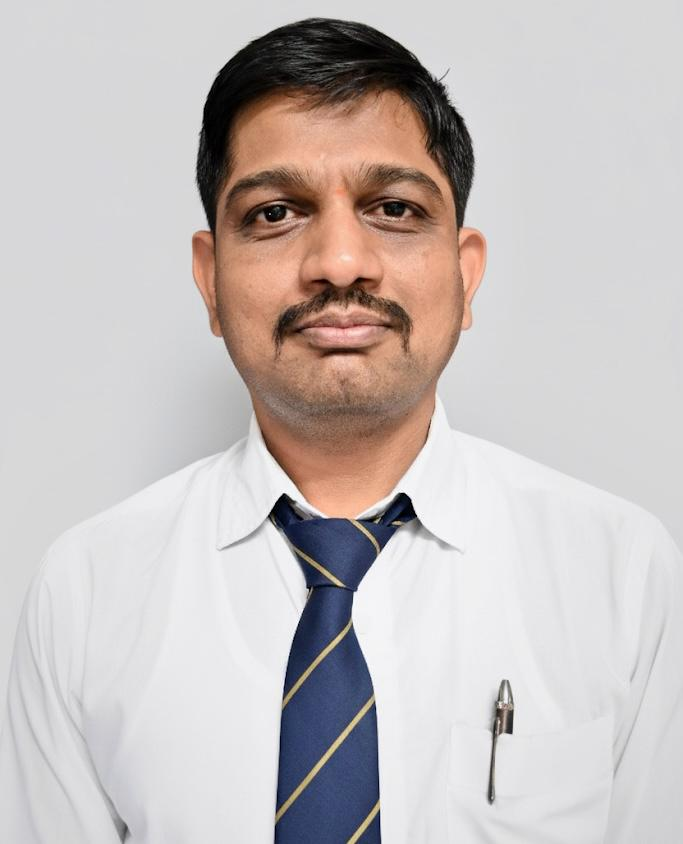

Ph.D. (Electrical Engineering)
Visvesvaraya National Institute of Technology (VNIT), Nagpur
Educator, researcher and electrical engineer working across control systems, power electronics, renewable energy, industrial automation and emerging AI/ML applications in energy systems.

Rajarambapu Institute of TechnologyProf. Rajanikant A. Metri is an Assistant Professor at Rajarambapu Institute of Technology. His professional journey combines engineering practice, teaching, research, student project development, technical workshops and academic service.
His CV reflects work in control engineering, piecewise-smooth and discontinuous dynamical systems, power electronics, microgrids, renewable-energy systems, industrial automation, PLC-SCADA, electric vehicles, AI/ML applications and engineering education.
Visvesvaraya National Institute of Technology (VNIT), Nagpur
College of Engineering, Pune · CGPA 8.44
Government College of Engineering, Karad, Maharashtra · 65.67%
Ispat Industries Limited / Ispat Energy Limited, Mumbai · Captive Power Projects & Corporate Office
A connected research profile spanning nonlinear control, energy conversion, intelligent systems and engineering education.
State-transfer problems, piecewise-smooth/discontinuous maps, bifurcation and nonlinear behaviour.
Converter dynamics, droop control, power sharing and DC microgrid control strategies.
Wind forecasting, photovoltaic systems, energy modelling and grid-oriented applications.
PLC-SCADA, factory/process automation and practical industrial engineering applications.
AI/ML integration with power systems, automation and data-driven engineering applications.
Project-based learning, next-generation learning environments and student development.
Selected records from the 48 conference/publication entries in the CV.
R. A. Metri, C. L. Bhattar, A. R. Thorat, K. R. Naik · Circuit World.
DOI ↗Journal of Renewable Energies, Vol. 29, Issue 1, pp. 263–279.
DOI ↗Sustainable Energy, Environment and Green Technology for a Greener Future, Springer, 2026.
DOI ↗Research paper presented at IC-SMART-2026, Rajarambapu Institute of Technology, 27–28 March 2026.
Research paper presented at IC-SMART-2026, Rajarambapu Institute of Technology, 27–28 March 2026.
R. A. Metri, B. A. Rajpathak, K. Raghavendra Naik and M. L. Kolhe · Mathematics, 13(15), 2518.
DOI ↗Journal of Engineering Education Transformations, Vol. 38, Special Issue, pp. 428–436.
DOI ↗ICAEEE 2024, Advances in Energy and Environmental Engineering.
ICAEEE 2024, Advances in Energy and Environmental Engineering.
ICAEEE 2024, Advances in Energy and Environmental Engineering.
ICAEEE 2024, Advances in Energy and Environmental Engineering.
The Indian Journal of Technical Education, Vol. 47, Issue 01, pp. 157–161.
R. A. Metri, B. A. Rajpathak, H. Pillai · Nonlinear Dynamics, 2023.
DOI ↗The Indian Journal of Technical Education, Vol. 46, Issue 04, pp. 256–261.
The Indian Journal of Technical Education, Vol. 46, Issue 04, pp. 245–250.
R. A. Metri and B. A. Rajpathak · IEEE Transactions on Industry Applications, 58(3), 4098–4108.
DOI ↗IEEE STPEC 2020, pp. 1–5.
DOI ↗WEEF 2019 Proceedings · Procedia Computer Science – Elsevier, Vol. 172, pp. 314–323.
DOI ↗This is the selected publication view. The publication section presents selected records from the CV; Google Scholar provides access to the broader publication profile.
Design Patent Registered.
Rotor-position detection, inverter switching and PWM generation using a Microchip dsPIC controller. Software tool: MP-LAB.
Development and testing of a hydrogen/oxygen gas generation concept for vehicle fuel enhancement, including testing on a two-wheeler IC engine.
Reviewer contributions include ICPCCT-2025, ICTIEE 2025 and other international academic events listed in the CV.
Sessions and lectures on Control Systems, MATLAB/Simulink, PLC-SCADA, Arduino and related electrical engineering topics.
Coordination of programmes including PLC-SCADA training, Power Quality, Control Systems and Arduino applications.
FDP/STTP participation in Power BI, AutoCAD, sustainability, power electronic converters and electrical engineering pedagogy.
Faculty Advisor at the 6th Mitsubishi Electric Cup 2026, national-level factory automation competition.
For academic collaboration, research discussions, student projects, workshops and professional activities.
Rajarambapu Institute of Technology
Department of Electrical Engineering